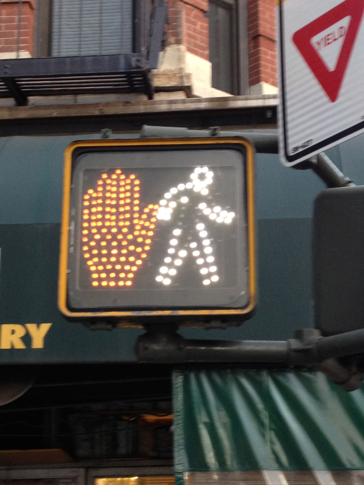

Image credit: Chetan Chawla
I have been a heavy consumer of blogs (mainly business and technology) for over a decade and recently began to think that I should turn my attention to producing. When I decided to write this blog, a few things about blogging (medium of expression both liberates and lassos you) stood out:
- Blogs are inherently conversational and express “the unedited voice of a single person”.
- However, this conversational and topical nature (the very things that attract an audience) of blogs (true to a lesser extent of other mediums like talk radio, TV etc.) make them highly susceptible to heuristic biases and logical fallacies.
- Biases and ease of publication (no editorial or peer review required) on part of the author combined with tendency towards confirmation biases on part of the reader means that many blogs spiral downwards into echo chambers.
As a general warning/ checklist for both my writing and readers, I have a list of (some) common biases below that have the potential to affect my writing. Since this list is based on the most common biases (full list of biases) I have noticed as a reader, they apply equally to any other blog posts you may be reading.
The Bias Checklist:
- Availability bias : refers to what comes first to mind or is easily recalled. In making this list, I am guilty of the availability bias.
- Confirmation bias: tendency to look for evidence that confirms existing beliefs/ theories. Alternative is actively seeking falsification. I have yet to come across a blog that actively seeks falsification, reader comments can provide counter-examples but often degenerate into trolling.
- Base rate fallacy : far more common than realized, base rate is the frequency of a generic type of event. This is significantly driven by the fact that blogs are topical and hence writers are exposed to specific rather than representative samples from any given population. The best way to avoid this fallacy is to always keep in mind (or look for) the base rate (of event under consideration) for the whole population.
- Self-serving bias : refers to tendency of individuals to attribute their success to themselves and failure to external factors. This shows up heavily in business and technology contexts as halo and network effects are systematically underestimated as drivers of success. For example, is a company successful because of the attributes (schooling etc.) of a CEO/ company (behind headlines such as: “How to Innovate like…” or “10 Takeaways from ….”) or because the starting conditions led to dominant positions?
- Survivorship bias : this is perhaps the most common misleading bias both because of the popularity of success and hustle culture, but also because of the bigger problem of follow you passion being infused throughout the West. It refers to tendency to focus on companies (or individuals) that survived a process rather than the starting population. I claim this to be the most misleading because it give a false sense of understanding and causality. Just because some attribute (innovation, html5 ninjas, hoodies, short meetings) is present in successful companies doesn’t imply that it is causally linked to their success. An easy way to spot this one is to see the sample being used, did the writer/ blogger/ researcher talk to or survey the starting population or just those that succeeded? This bias is rampant in studies of entrepreneurship, technology and innovation. Discount the claims of any blog post/ research that is based ONLY on successful companies or entrepreneurs. The danger of such research has been highlighted by writers like Nassim N.Taleb and the medical researcher John P.A. Ioannidis.
I tend to keep this checklist in mind when reading and (hopefully) will be able to avoid falling into these traps while writing. Whenever it is not possible for me to avoid a bias (for example, when writing about social networks I will likely be indulging in survivorship bias by focusing on the top few companies in the industry) I will point out that shortcoming as a limitation of any inferences I make. As always, caveat lector – reader beware!